Free to forkNo licence and no copyright claim: build this game under your own name, or lift one idea from it. Why?
Game overview
Lockbreaker is a metroidvania that never runs out. Every campaign generates a new lone hero, a new place to explore, a new network of rooms full of locks and keys, and a full build of weapons and upgrades designed to open them. You play it from the first room to the final boss, a few evenings' worth, and then a different one is waiting.
The heart of the genre stays exactly as it is: a complex world of rooms, obstacles that need the right ability, weapon or protection to pass, and keys that stay useful afterwards, so every lock you open also makes you stronger, faster and able to do more. What changes is everything that makes the genre frustrating: secrets you have to bomb every inch of the wall to find, a map that leaves you looking things up, weapons you juggle between instead of growing, and bosses that stop you cold.
It's a rough idea for making Super Metroid, Ex Vitro and Azimuth better and endlessly playable, with Nova Drift's builds, Cryptark's ships-as-maps, Tunnels of the Underworld's cave flying, Syndemic's generated room networks, Iji's world and secrets and Oblige's generated levels in the mix.
Target audience
People who love the moment a locked door finally opens and the whole world folds back on itself, and who have finished every metroidvania they could find, some of them more than once.
They want a new world to learn, not the same one again, and they're tired of probing walls, reading wikis and fighting the menu to switch weapons.
WASD and the mouse, two weapons and a handful of keys. Easy to pick up; the depth is in the builds.
Game's purpose
Understanding and discovery: learning a place until it opens up.
Growth and power: from a lone arrival to a walking arsenal, in every campaign.
Variety: a new place, a new hero and a new build each time.
It deliberately avoids draining respect for your time (secrets that follow rules, a map that remembers) and safety (no boss can wall you).
Core concept
The genre default is a single handmade world, finished once. After that you replay a world you already know by heart, or wait years for a sequel.
This design keeps the handmade feel and changes the structure: a generator that builds the world and the build together, from a database of locks, keys, rooms, enemies and bosses, so every campaign is a whole, coherent, first-time expedition.
The genre's promise, becoming overpowered by the end, is kept on purpose.
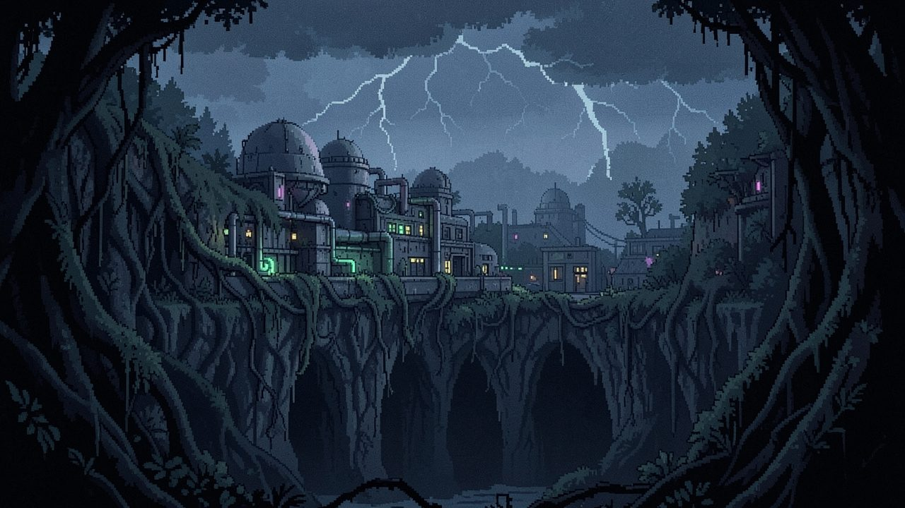
"Somewhere with diverse sectors and a source of high technology, and nobody coming to help."
Lore and story
There's no single story. Every campaign generates its own: a hero, a place and an event, told without words. The one rule that never changes is the genre's oldest one: you're on your own. Nobody is coming, you can't call for backup, or something stands in the way of anyone who tries.
Who you are
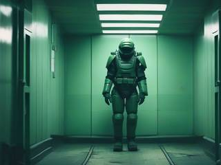
A hazard worker, an enemy's prisoner, a bounty hunter, a scavenger, an explorer, a rescue worker, a government auditor, a sheriff, a captive alien, a scout or special forces unit, a hunter-killer robot, an assassin, a researcher, a security officer, a local hunter. Each brings a different reason to be alone in there.
Where you are
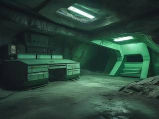
A space lab, a planetary research bunker, a military fortress, a starship, colony ship or space hulk, a base inside an asteroid, moon or megastructure, an evil compound, an open underwater or underground sector, an island chain, ancient ruins, a derelict debris field, a ship graveyard, or a journey that starts in a town, runs through a city and ends at the top of a space elevator.
The place can be natural, artificial or both, but it always needs a source of technology, because your upgrades come from there: a base, outposts, or just scattered containers in the wild while the land itself provides the locks.
What's happening
Each campaign also rolls an event: someone trapped, something escaped, something buried waking up. The few people you meet speak in nods, a word or two and simple icons, and some of them can be saved, or not, depending on what you do along the way.
Controls and interface
Side view, WASD to move and the mouse to aim, for better movement and aim than a gamepad's eight directions. Gravity is light and floaty, or absent altogether, apart from force and gravity zones that push things around. The design names the scheme; the key layout below fills in the rest.
Move
A D
Move
W, Space
Jump, or thrust upward
S
Crouch, drop down, or thrust downward
Shift
The build's movement ability
M
Map
Esc
Pause
Fight
Mouse
Aim
Left button
Primary weapon
Right button
Secondary weapon
Both buttons
The hidden technique, once your build has one
E
Use, talk, take
There's no weapon switching. Two weapons sit on the two mouse buttons for the whole campaign, and upgrades make them better instead of adding more to juggle.
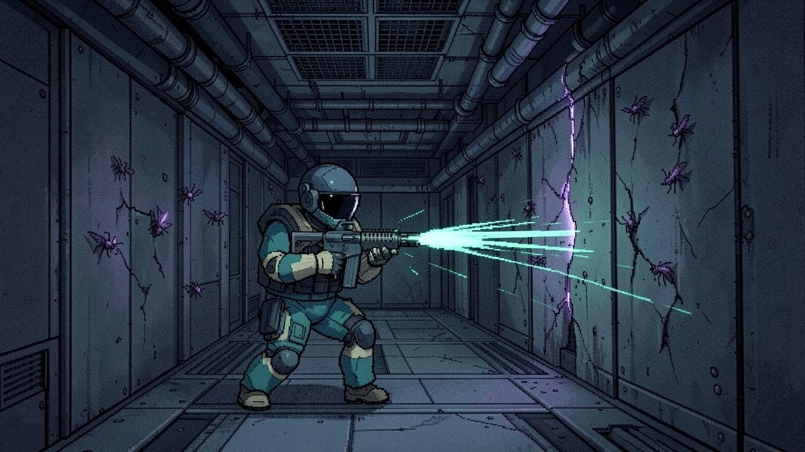
"Only walls with visible cracks or wear can be broken, and the marks tell you at a glance what will break them."
Game layers
The expeditionsOne generated campaign after another. Never runs out.
A campaignOne hero, one place, one build, played to the final boss.
A sectorA cluster of rooms with its own look, locks and boss.
A roomEnemies, a lock, a key, maybe a secret.
01 · Moment-to-moment
Room by room
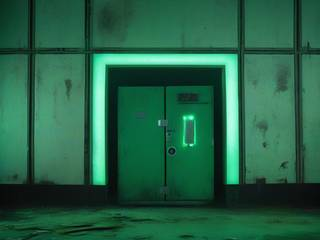
Fight through the swarmers and regulars, deal with the occasional bruiser or elite, spot what's locked and what it would take to open it, and open what you can. Defeated enemies drop what refuels your weapons and energy, so the fight itself keeps you supplied.
02 · Low metagame
One expedition
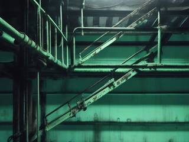
A campaign is a whole metroidvania: sectors of room clusters linked by cross-routes and dead ends, a boss foreshadowed in each, upgrades hidden along the way, and a final boss at the end. You arrive alone and leave overpowered, by however much you went looking for.
03 · High metagame
A shelf of movie posters
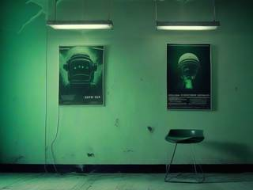
The generator never runs out of expeditions, and each finished one leaves a memento of what happened in it: a movie-poster prompt, written from your campaign's hero, place and events, to paste into the image generator of your choice. Or the game composes a cover from its own sprites, like the amateur pixel-art box covers Oblige makes for its levels. Every finished campaign also keeps a button to replay its seed, to run it again faster or hand it to someone else.
04 · Practical game flow
A few evenings each
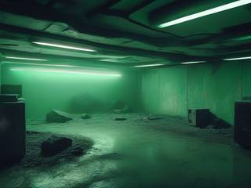
A campaign is a few evenings long, played in sittings of a sector or two. Save whenever you stop; the expedition waits where you left it.
Game variants
There's one way to play, the generated expedition, but the design lists six bodies it could be built around. Each changes how you move and what counts as a lock. Whether they become separate games or a choice each campaign makes is left open.
Variant
What you are
Powersuit
The classic: an armored explorer on foot
Cave flyer
A small ship threading tunnels, as in Tunnels of the Underworld
Vehicle
A Metal Slug–style tank, remote-driven by an android
From nothing
An ordinary human who starts unarmed and ends the campaign in a powersuit
Mech and pilot
A walking mech, as in Metal Knights or Front Mission: Gun Hazard, whose tiny pilot can climb out and go where it can't
Top-down
Any of the above, seen from above
Features and mechanics
The heart of it
A world built around its locks
The generator doesn't scatter upgrades through a random maze. It works the way a designer of a handmade metroidvania would, in order, and every step decides what the next one can use:
The placeSectors and room networks, from room templates
The locksWhat blocks each path: a weapon, a movement ability, an item, or nothing
The buildWhich weapons and upgrades exist, and in what form, to open them
The oppositionEnemies and bosses, with their extra modules
The storyThe hero, the event, the people you'll meet
It draws everything from a database of locks, keys, room templates, objects, enemies, bosses and boss modules. A level might have no weapon-locked doors at all, only movement and item paths, and that in turn changes which weapons and upgrades get made. Add one new lock, room or boss module to the database and it can turn up in every campaign from then on.
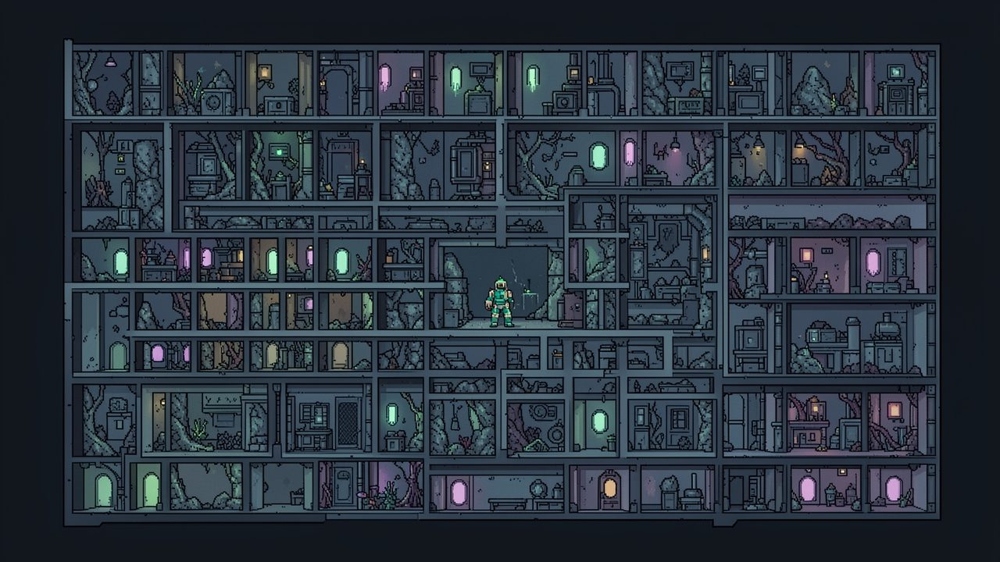
"The generator places the locks first, then decides which weapons and upgrades this campaign needs to open them."
Grow, don't swap
Builds, not side-grades
Azimuth's weapons were mostly side-grades: a hassle to switch between, and more buttons than anyone needs. Here every upgrade empowers what you already have, combining effects into the same weapon, the way Nova Drift's mods do.
Nova Drift's motto is "no matter what build you want, there is a way to make it work." The difference here is that the campaign picks the build: it chooses a focus (your body, the primary or secondary weapon, an ability, a shield or a construct) and offers mods that suit it, with variants and side branches. Many mods double as keys, combat, puzzle or mobility, with some elemental and utility effects baked in. How overpowered you end up depends on how many of the optional ones you go and find.
Light, heavy, either
Two weapons, any roles
Super Metroid has three weapons and Nova Drift has one. Here you always have two, and they can be anything: two ranged weapons, two melee weapons, or one of each, even a pile bunker. In the classic setup the beam is the light weapon and the missile the heavy one that opens doors; here the beam might be the heavy door-opener and the rockets the swarm clearer.
Rule
Why
Generic archetypes
Thermal lance, grenade, missile salvo, blast, blade, railgun, flak, and hybrids like a grenade salvo, flak rail or blast lance, each with its own affinity (speed, size, blast radius, projectile count, fire rate)
Fits every upgrade
Every archetype works with the generic mods: fire rate, velocity, projectile size, spread, recoil and the rest
One ammo weapon at most
Either weapon may run on ammo, never both, so you're never out of options
Heat, not self-damage
Nothing hurts you for firing it; powerful weapons build heat and vent instead
Charging is an upgrade
Either weapon, both or neither can gain a charge, in many styles: a classic charge shot, a multi-stage charge, charges stored in pickups, or powered shots that refill over time
No probing every inch
Secrets that follow rules
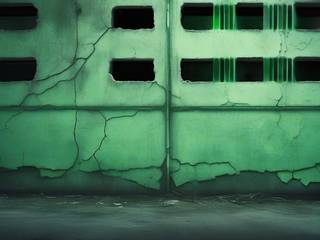
Finding a secret should be a pleasure, not a chore of bombing and shooting every surface. So the rules are consistent and predictable: only certain walls can break, those with a visible overlay like cracks or erosion, and you can safely ignore the rest.
The mark also tells you at a glance what will break it: a missile, a bomb, a heavier blast, a speed charge. The puzzle is getting what it needs, never finding out that it was there.
No wiki needed
A map that remembers for you
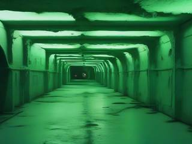
The map marks every room with an unclaimed upgrade, as an energy signature: a circle while something is still there, a dot once it's all taken, whether it's in the room itself or in a little dead-end compartment beside it. It also shows the room's connections and possible exits.
So you never have to look up what you missed, or wonder whether a forgotten dead end was really empty. What stays up to you is remembering what that spot needed to open, which is the part of the genre worth keeping.
Epic, never a wall
Bosses you can always outlast
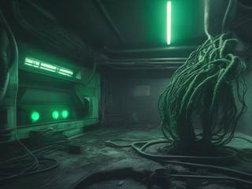
Every boss is foreshadowed at least in the room before it, and often across its sector. Its presence shapes the area, with blockages and hazards it causes, like vines choking a reactor, that clear when it falls.
A diligent explorer who found most upgrades beats it easily; one with the bare minimum gets a tough but doable fight. And no boss can wall you: if the fight goes badly, you can switch to defense and dodging and refill your health and ammo from what the boss drops, all the way to full, as you dance around it. The only cost is that the fight takes longer, and you'll know you could have done it with more finesse.
Bosses are preset types, the way Starsector's ships are, with randomized extra components: abilities, weapons, passives and cosmetic parts. Fights are meant as epic slugfests rather than David against Goliath.
Worth the effort
The hidden technique
There's no ultimate beam at the end; a fully modded pair of weapons is plenty. Instead, a build can include a hidden technique: something special you do on purpose that, for the extra effort and a share of your ammo, unleashes a move strong enough to be worth it.
Super Metroid's hidden techniques were mostly too convoluted for their payoff and rarely used outside curiosity. This one is meant to be used: a super attack like a fighting game's, up close or at range, or a defensive field around you that protects and damages, and it takes its shape from your current weapons, armor, shield and mods.
Told without words
Stories in icons
Every campaign has its own story, event and context, told through the environment. The people in it are mostly stuck in one place: they do one thing, and when something changes, they do another. They communicate in nods and a few simple signs:
Please, helpA request
Thank youOr a curse
ArrowsDirections
! !! !!!Danger, rising
? ?? ???Confusion, or a clue nearby
OKClear, thumbs up
Like in Iji, what you do along the way can change how it ends: someone you reach in time can be saved.
Cheap to grow
White sprites, tinted per world
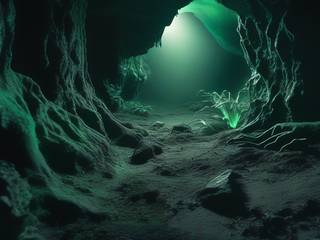
Room templates, objects, enemies and bosses are drawn as white sprites and tinted during generation, the way Astroneer recolors its plants, objects and hazards to match or contrast with the terrain around them. One sprite becomes a different-looking creature in every world, so the database looks far bigger than it is.
Enemies come in standard roles: weak swarmers, medium regulars, uncommon bruisers and rare elites. Some respawn, some come from endless spawners, and the elites and special ones stay dead once killed. Some rooms hold an enemy that a specific weapon handles best, even though breaking the intended order is allowed.
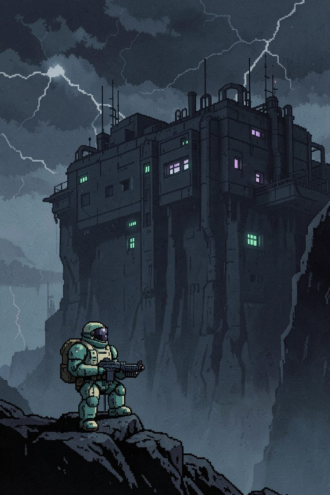
Signal lost
Lockbreaker: Endless Metroidvania Expedition
No backup is coming. Somewhere ahead there's a source of technology, a door that won't open yet, and a thing in the dark that has been waiting a long time. You'll come out of it carrying everything you found on the way in.
Then there's another place, another stranger in another suit, and another door.